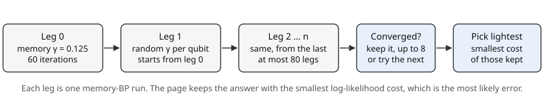

Part 3 · Decoding · Chapter 9 · 6 min read
Relay-BP: giving belief propagation a memory
Relay-BP reruns belief propagation in short legs with a random memory strength each time and keeps the lightest answer. You will be able to say why that escapes the traps of Chapter 8 and read its benchmark.
Key terms
Memory in the messages
Plain BP forgets. Each iteration rebuilds every qubit’s belief from its prior and the latest messages. Memory BP lets a qubit keep part of what it already believed. In _minsum the prior is replaced by a blend with the previous total , using a memory strength .
In words: with the qubit starts each iteration from its prior, which is the BP of Chapter 8; with it leans on its own history, which damps the echoes that cycles create; with it leans away from its history, which breaks a belief that has locked in.
One fixed helps some syndromes and not others. The repository’s Relay-BP therefore does not pick one.
Legs, a relay of runs
The first leg is memory BP with the same = 0.125 on every qubit, for up to 60 iterations. Then comes a relay of up to 80 further legs of up to 50 iterations each. Before every leg the decoder draws a fresh for each qubit, uniformly between −0.24 and 0.66, so each leg explores differently. Each leg starts from the previous leg’s posteriors, not from the priors. These values come from Müller et al., who tuned them for larger codes; here they are reused unchanged.

A leg that ends with a guess reproducing the syndrome has converged, and that guess is stored. Relay-BP does not stop at the first one. It keeps collecting until it holds 8 solutions, or runs out of legs, and returns the lightest, meaning the one with the smallest total . That is the step Chapter 8 lacked: the weight-4 guess BP stopped on is a valid solution, but a lighter one from a later leg beats it.
| Depolarizing p | BP | Relay-BP | Limit |
|---|---|---|---|
| 0.02 | 6.7% | 2.9% | 2.6% |
| 0.03 | 9.9% | 5.1% | 5.4% |
| 0.06 | 24.4% | 16.7% | 16.3% |
python scripts/benchmark.py.What it achieves
The self-check feeds all 37 single faults of the three-round model to Relay-BP and asserts that every one is corrected, with a result that matches the syndrome and the right logical class. Plain BP, on the same faults, misses 4. Figure 9.2 shows the benchmark behind these numbers. A full circuit run agrees: 2,816 shots at depolarizing p = 0.03 give BP 20.8%, Relay-BP 11.7% and a limit of 10.5% per shot.
The remaining gap to the limit is not a failure of the legs. The optimal decoder adds up all errors that act the same way on the logical qubit, which a decoder that returns one error cannot do, and more legs do not close it. On a code this small Relay-BP is already near the ceiling. The method is from Müller et al., “Improved belief propagation is sufficient for real-time decoding of quantum memory” (arXiv:2506.01779). The decoder here is a plain numpy version, because the authors’ package is written in Rust and does not run in the browser. Its default numbers are those of relay_bp in the repository, not necessarily the paper’s.
Careful
Relay-BP is random: it draws its memory strengths from a random generator, so two runs on the same syndrome can return different, equally valid, solutions. Judge it by rates over many shots, not by one.
Try it in the simulator
Choose Depolarizing noise, p = 0.03, 256 shots, then compare the BP and Relay-BP bars and the black limit tick. Look for Relay-BP’s bar sitting at the tick while BP’s is well above. Use at least 192 shots to see the gap through the statistical noise.
Open the simulator with this setupCheck yourself
What does a negative memory strength do?
It pushes a qubit’s belief away from its previous total, which can undo a belief that has locked in on a wrong answer.
Why keep up to 8 solutions instead of the first?
Any guess that reproduces the syndrome ends a leg, but a heavy one can be wrong. Taking the lightest of several is likelier to be the real error.
Sources
- T. Müller, T. Alexander, M. E. Beverland, M. Bühler, B. R. Johnson, T. Maurer, D. Vandeth (2025). Improved belief propagation is sufficient for real-time decoding of quantum memory. arXiv:2506.01779. arxiv.org/abs/2506.01779
Supports: Relay-BP and its default parameters. relay-bpon PyPI. Python bindings for the Rust implementation of Relay-BP (Apache 2.0). pypi.org/project/relay-bp/
Supports: the authors’ Rust package, which this project does not use.- P. Panteleev, G. Kalachev (2021). Degenerate quantum LDPC codes with good finite length performance. Quantum 5, 585. doi.org/10.22331/q-2021-11-22-585
Supports: degenerate quantum LDPC codes and finite-length decoding. - D. Poulin, Y. Chung (2008). On the iterative decoding of sparse quantum codes. Quantum Information and Computation 8, 987. arxiv.org/abs/0801.1241
Supports: iterative decoding of quantum codes.